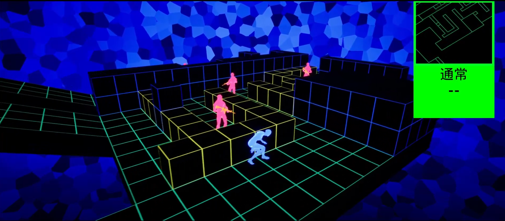
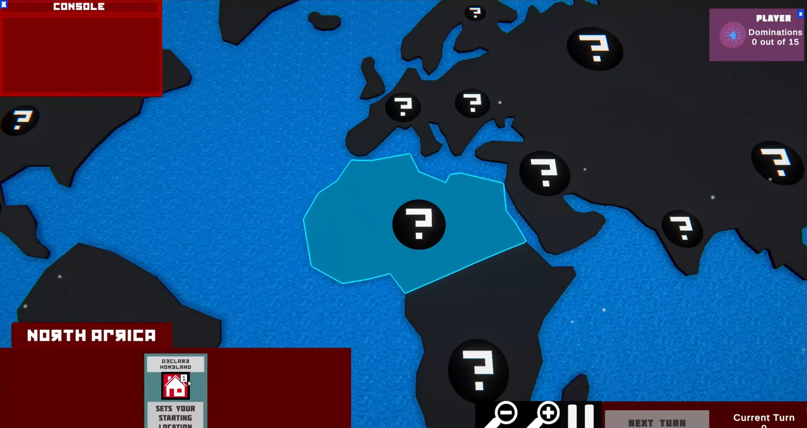
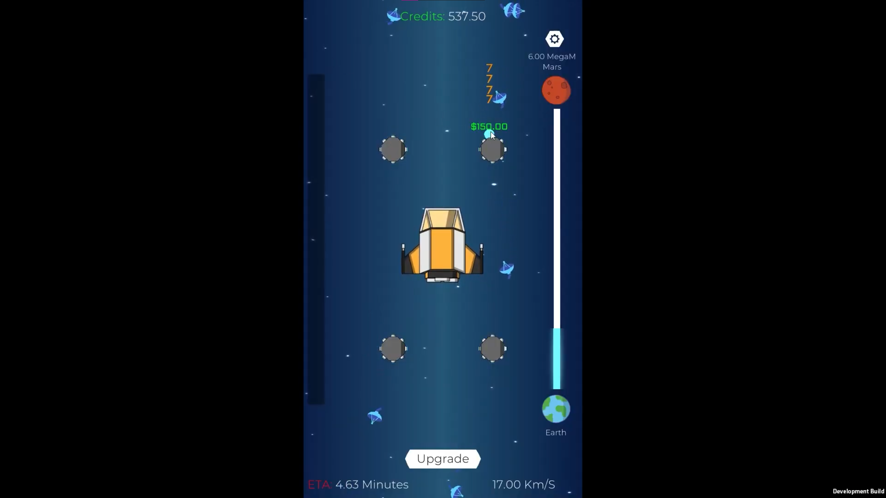
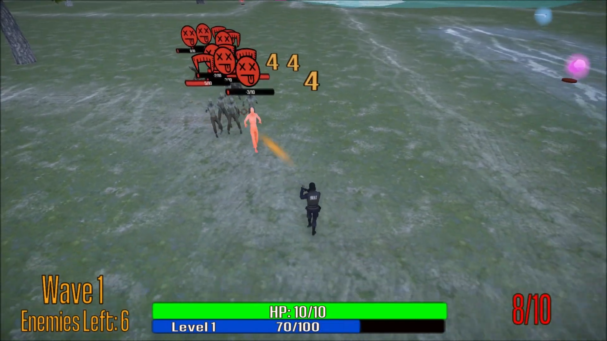
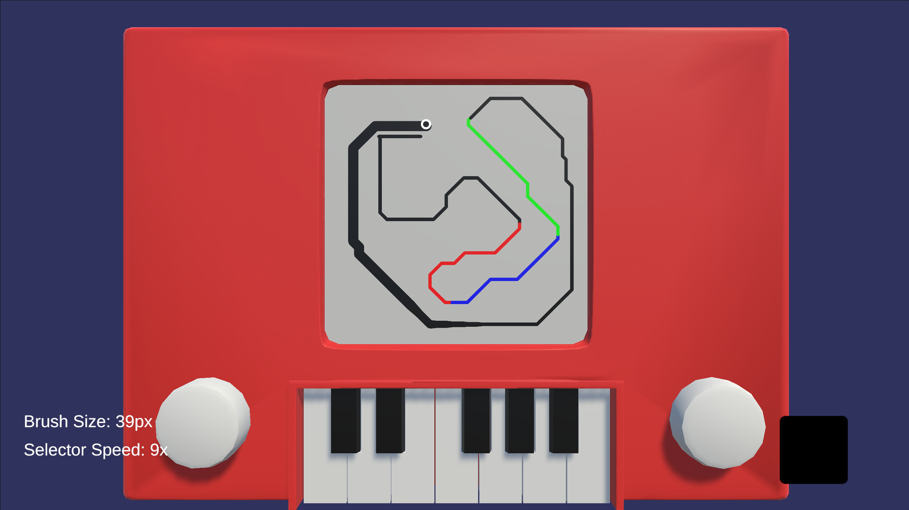
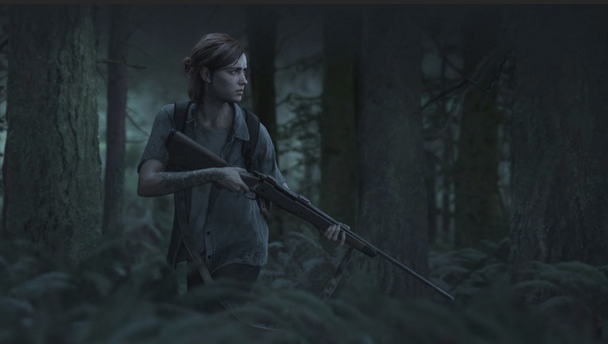
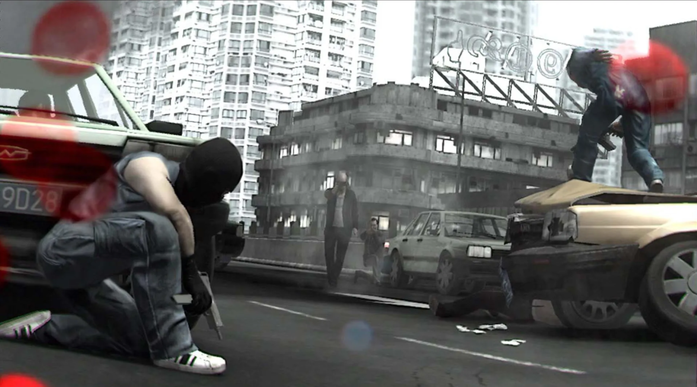
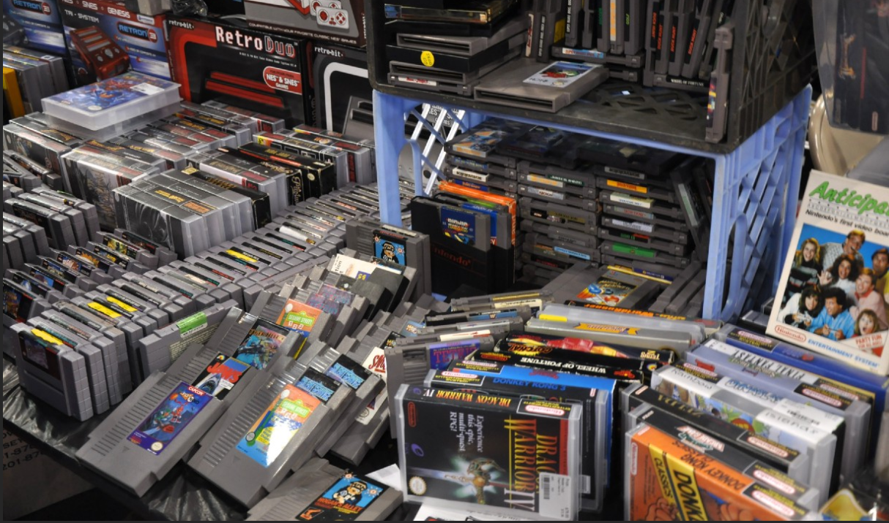

Ryan Wallace - Game Developer
Heya! Name's Ryan. I love games, making games, and just learning new ways to better myself professionally and personally.
Let's get to know each other!
Let's Go!Heya! Name's Ryan. I love games, making games, and just learning new ways to better myself professionally and personally.
Let's get to know each other!
Let's Go!Here are some pretty cool stuff I've worked on over the years. From physics and path-finding demos to a zombie shooter and a physics puzzler.
Click the thumbnail of a project to find more in-depth information regarding that project.

Attack_Vector.exeMGS inspired stealth game (In Progress) |

DogmaGroup project based on the Cold War (Playable, Github) |

Planet JumperCasual Clicker game (Playable, GitHub) |

Horde SlayerAction top-down zombie shooter (Playable, GitHub) |

Etch a KeyEtch a Sketch, but with Music! (Playable, Github) |

TobiraExploring a dreamworld (Playable, GitHub) |
You can also find some samples of my writing ability! I write about stuff I find super interesting in the gaming sphere.
You can see some featured articles below, or you can see all of 'em on my blog.
Blog

Violent Anti-violence Games |

Beauty in Misery - Analysis of Ugly Games |

Video Game Preservation |

Should Video Game Remakes adhere to its Source Material? |
Interested in learning more about my work or just wanna talk about the wonders of the universe? Hit me up.
༼ つ ◕_◕ ༽つ